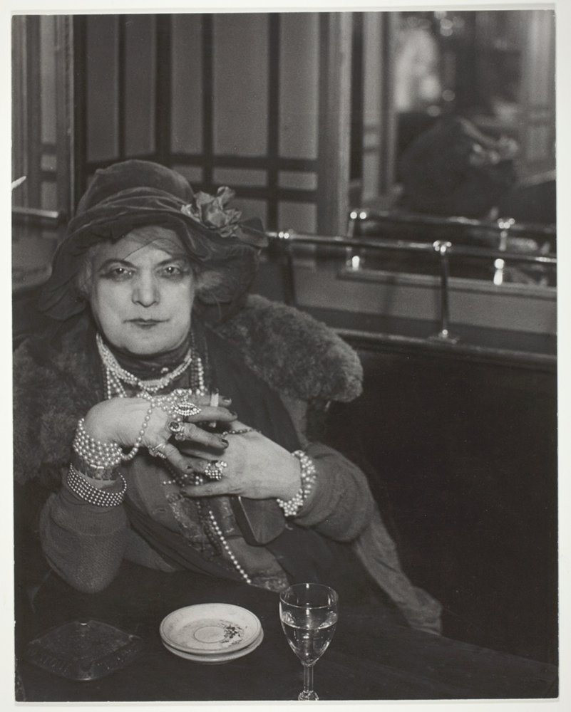

Bijou at the Bar de la Lune, Montmartre
Brassaï · 1932 · Gelatin silver print · 50.6 × 40.1 cm (image/paper/mount) · Art Institute of Chicago
In copyright. Look and learn: shown for study, not for download.
Brassaï came to photography through journalism and through walking Paris late at night; at first he used pictures to earn more from his articles. André Kertész, a fellow Hungarian, taught him. His first collection, Paris de nuit, came out in 1933, the year after this picture. The print entered the Art Institute of Chicago through its Peabody Fund in 1955, and it is half a metre tall.